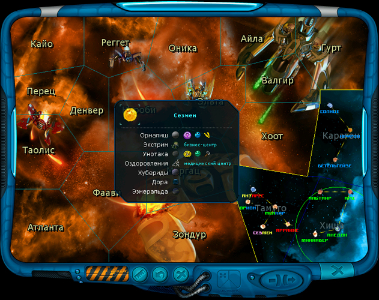

–уководство рейнджера > ѕанель
навигации > √алактическа€ карта (M)
|
–уководство рейнджера > ѕанель
навигации > √алактическа€ карта (M)
|
| √алактическа€ карта (M) Ёто карта исследованной части нашей галактики. ќна состоит из нескольких секторов-созвездий. ¬ начале игры рейнджер получает подробную карту только ближайших созвездий. «вездные карты других секторов он может приобретать в здани€х правительств, но только на планетах систем, граничащих с этими неизвестными секторами. ѕримечание. „ем больше открыта карта галактики, тем шире и разнообразнее будут правительственные задани€. |

| ѕо карте можно узнать рассто€ние до любой звезды в парсеках, а также получить
список планет и космических станций в любой
звездной системе, причем там будут указаны принадлежность к той или иной расе
и отношение к игроку-рейнджеру. ѕримечание. ќтображаемый на галактической карте шрифт измен€етс€ в настройках игры. Ќаход€сь в открытом космосе, игрок может совершить прыжок к другой звездной системе. „тобы узнать рассто€ние от текущей звезды до любой другой: Х ўелкните левой кнопкой мыши по соответствующей звезде. „тобы получить список планет и космических станций в любой звездной системе: Х ўелкните правой кнопкой мыши по соответствующей звезде. |